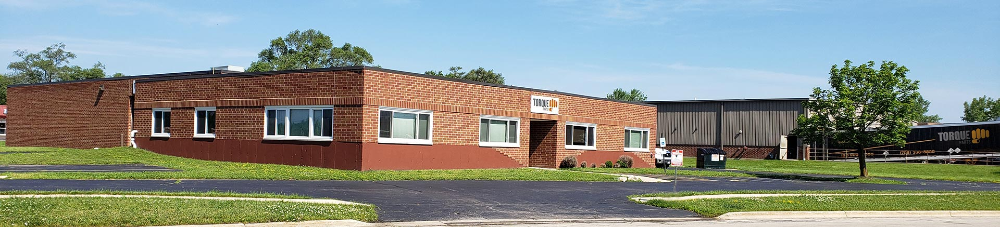

Torque Parts LLC

Truck Headlights
Illuminating the Path: A Guide to Truck Headlights
For any truck owner, truck headlights are more than just light sources; they are crucial components for safe nighttime driving and navigating challenging conditions. Whether you're traversing winding highways, exploring off-road terrains, or simply parking your truck at dusk, having reliable and efficient headlights is paramount. This comprehensive guide delves into the world of truck headlights, equipping you with the knowledge to choose the right ones for your specific needs and ensuring optimal visibility on the road.

Understanding Different Types of Truck Headlights
Truck headlights come in various types, each offering distinct advantages and applications:
- Halogen Headlights: These traditional headlights utilize halogen bulbs, creating light by heating a filament filled with halogen gas. They offer a reliable and cost-effective option, though their lifespan and overall light output are lower compared to other options.
- HID (High-Intensity Discharge) Headlights: These headlights employ xenon gas-filled capsules that generate light through an electric arc. They provide a whiter, brighter light with improved penetration compared to halogens, but they can be more expensive and require a complex system for operation.
- LED (Light-Emitting Diode) Headlights:: LED headlights utilize light-emitting diodes to generate a bright, focused beam. They offer numerous advantages, including exceptional energy efficiency, long lifespan, and a durable design. However, they often come at a higher initial cost than other options.
- Laser Headlights: Emerging as the most advanced technology, laser headlights utilize concentrated laser beams to create an ultra-bright and precise light pattern. They offer unparalleled illumination and safety benefits, but their high cost and limited availability currently restrict their widespread use.
Choosing the Right Truck Headlights for Your Needs
Selecting the appropriate truck headlights depends on several factors, including:
- Your Budget: Halogen headlights are the most budget-friendly option, while LED and laser headlights tend to be significantly more expensive.
- Desired Performance:If you prioritize light output and visibility, LED and laser headlights offer the best performance. However, halogens might suffice for casual nighttime driving.
- Driving Conditions: For frequent off-road use or driving in challenging weather conditions, the durability and long lifespan of LEDs might be advantageous.
- Aesthetics: Consider the look and style you prefer. LED headlights often boast a modern and sleek appearance, while some halogen and HID options might better suit a classic truck aesthetic.
Additional Factors to Consider
Beyond the type of headlights, several other factors influence your choice:
- Beam Pattern: Choose a beam pattern that best suits your needs. Options include low beam for regular driving, high beam for illuminating long distances, and fog lights for improved visibility in fog or adverse weather conditions.
- Brightness: Measured in lumens, higher lumen ratings indicate a brighter light output. Consider your driving habits and visibility needs when choosing brightness levels.
- Legality: Ensure your chosen headlights comply with local regulations regarding brightness, color, and beam pattern.
- Installation: Some aftermarket headlights might require modifications to your truck's electrical system. Consider your comfort level with installation or seek professional help if needed.
Tips for Maintaining Your Truck Headlights
Proper maintenance ensures optimal performance and longevity of your truck headlights:
- Clean the headlight lenses regularly with a mild soap and water solution to remove dirt, debris, and yellowing.
- Inspect the bulbs and housings periodically for damage, wear, or burnt-out bulbs. Replace them promptly if necessary.
- Avoid touching the bulbs with your bare hands as the oils from your skin can reduce their lifespan.
- Consider headlight restoration kits to remove minor scratches and hazing from the headlight lenses.
Conclusion
By understanding the different types of truck headlights, considering your needs and preferences, and following proper maintenance practices, you can ensure your truck is equipped with reliable and efficient lighting, enhancing safety and confidence on the road. Whether you're a seasoned adventurer or a daily commuter, the right headlights play a crucial role in illuminating your path and ensuring a safe and enjoyable driving experience.
For detailed information, you can contact us: Truck Headlights
Shock Absorbers
Keeping Your Ride Smooth: A Guide to Shock Absorbers For Trucks
Pickup trucks are renowned for their versatility, tackling diverse tasks from hauling heavy loads to navigating rough terrains. However, this versatility comes with demands. Shock absorbers for trucks play a crucial role in maintaining a smooth and comfortable ride, ensuring optimal handling and control even under challenging conditions. This guide delves into the world of truck shock absorbers, exploring their function, types, considerations when choosing, and essential maintenance tips.

Understanding the Function of Shock Absorbers
Shock absorbers, also known as dampers, are essential components within a truck's suspension system. They are located between the axles and the frame, working in conjunction with coil springs or leaf springs. Their primary function is to:
- Control spring bounce: As the truck encounters bumps and uneven road surfaces, the springs compress and rebound. Shock absorbers absorb this bouncing motion, preventing excessive oscillation and ensuring a smoother ride.
- Improve handling: By controlling spring bounce, shock absorbers contribute to better handling and stability, especially when cornering or maneuvering at higher speeds.
- Reduce tire wear: Excessive bouncing can lead to uneven tire wear. Shock absorbers help minimize this effect, extending tire life and improving fuel efficiency.
- Enhance comfort: A smoother ride translates to a more comfortable driving experience for both passengers and cargo.
Types of Truck Shock Absorbers
Truck shock absorbers come in various types, each offering distinct characteristics and applications:
- Twin-tube: These are the most common type, featuring an inner cylinder filled with hydraulic fluid and an outer cylinder containing gas. They offer a good balance of performance, affordability, and durability.
- Monotube: These shock absorbers have a single-tube design filled with nitrogen gas and hydraulic fluid. They offer improved handling and performance compared to twin-tube shocks, but can be more expensive.
- Gas-charged: These shocks utilize nitrogen gas in a separate chamber within the main cylinder. The gas helps separate the oil and prevents foaming, improving performance and consistency, especially under heavy loads or aggressive driving.
- Adjustable: Certain performance-oriented shock absorbers allow adjustments to the damping force, enabling customization of ride comfort and handling characteristics.
Selecting the Right Shock Absorbers for Your Truck
Choosing the appropriate truck shock absorbers depends on several factors:
- Truck Make and Model: Different trucks require specific shock absorbers designed for their weight, suspension system, and intended use.
- Driving habits and needs: Consider how you use your truck. If you frequently haul heavy loads or drive off-road, heavy-duty shocks might be necessary. For everyday commuting, standard shocks might suffice.
- Desired ride quality: Do you prioritize a softer, more comfortable ride, or a stiffer, more performance-oriented handling? Choose shocks accordingly.
- Budget: Shock absorbers range in price depending on the type, brand, and features.
Additional Considerations:
- Lifted trucks: If your truck has a suspension lift, you will need shock absorbers with a longer travel length to maintain proper suspension articulation and performance.
- Warranty: Consider warranties offered by different shock absorber manufacturers.
- Reputation: Opt for reputable brands known for their quality and durability.
Tips for Maintaining Truck Shock Absorbers
Regular maintenance is key to ensuring the optimal performance and longevity of your truck shock absorbers:
- Inspect your shocks periodically for leaks, damage, or worn bushings. Replace them promptly if necessary.
- Follow the recommended maintenance schedule outlined in your truck's owner's manual, which might specify intervals for shock absorber inspection or replacement.
- Avoid overloading your truck: Excessive weight can strain the suspension and shorten the lifespan of the shocks.
- Drive responsibly: Avoid aggressive driving behaviors like hard braking and sharp turns, which can put extra stress on the shocks.
Conclusion
By understanding the function and types of shock absorbers for trucks, considering your needs and preferences, and following proper maintenance practices, you can ensure your truck enjoys a smooth, comfortable, and safe ride on any journey. Remember, well-maintained shock absorbers contribute not only to a pleasant driving experience but also to the overall performance and longevity of your truck.
For detailed information, you can contact us: Shock Absorbers